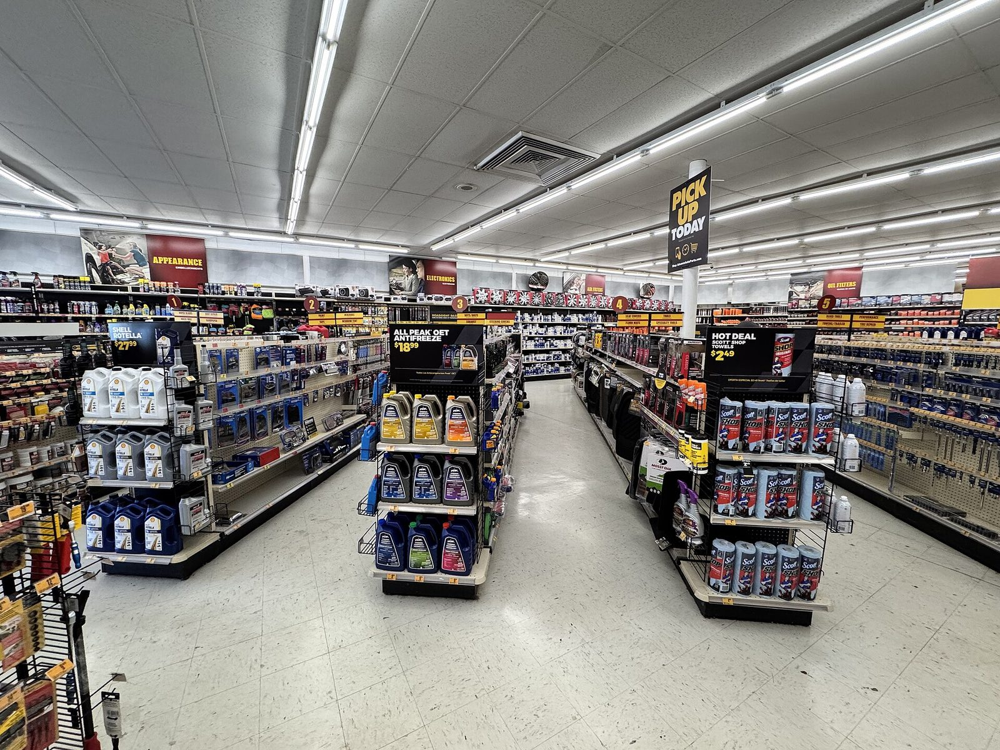

Organised Market Information
Spare-parts categories and practical guides are gathered in one place, so you can learn the main component types and how the market works instead of relying on word of mouth alone.
Explore automotive components through one organised market showcase — ten spare-parts categories and practical guides for ASH Spare Parts Market.
Presented under the guidance of Dr. Nadeem Nazir.

ASH Spare Parts Market is presented here as one organised digital showcase, so visitors can explore the market’s spare-parts categories and learn how the trade works — without walking every lane of the market first.
This website presents the market’s spare-parts categories and practical guides in a single, consistent place: ten component categories with photographs and descriptions, plus articles that explain how to explore the market and what to check before buying a part. It lists no vendors and no shops, and nothing is sold through this website.
The project is presented by Dr. Nadeem Nazir & Associates, as a digital initiative under the guidance of Dr. Nadeem Nazir — to give the market a professional digital representation and to make the market easier for visitors to explore.


Project presented by Dr. Nadeem Nazir & Associates.
Digital initiative under the guidance of Dr. Nadeem Nazir.
An informational catalog of the main spare-parts categories in the market. This catalog lists component types only — it is not a shop, and no prices are shown anywhere.
Photographs are real photographs of the component type where one is available. Where no photograph of a specific component was available, the card uses a real photograph of a spare-parts shop or its shelves, and the card says so plainly. Photographs are examples of the component type only; no vehicle-compatibility, stock or availability claims are made.
A single, organised place to explore ASH Spare Parts Market.
Spare-parts categories and practical guides are gathered in one place, so you can learn the main component types and how the market works instead of relying on word of mouth alone.
Engine parts, brakes, filters, electrical components, transmission and more — grouped into ten clear categories.
Each category has a short description and a real photograph, so you can see what kind of component it covers before you go looking for it.
Clear categories, short guides and a simple layout keep the market’s most commonly needed parts easy to find and understand.
Categories and guides for the market’s most commonly needed parts, in one place.
A clean, organised presentation of the market, presented by Dr. Nadeem Nazir & Associates.
N&N International @ ASH Spare Parts (N&Ninternational@ashspareparts) is a spare-parts market showcase website for ASH Spare Parts Market. It presents the market’s spare-parts categories, practical articles and contact information. It is not an online shop: no vendors are listed and nothing is sold through this website.
ASH Spare Parts Market is the spare-parts market this showcase presents. No history, establishment date, official partnerships or achievements for the market are stated on this website, because none were supplied.
Go to the Spare Parts section. It lists ten categories — Engine Parts, Suspension Parts, Brake Components, Electrical Components, Filters, Clutch & Transmission, Body Parts, Cooling System, Steering Components and Automotive Accessories — each with a short description and a real photograph.
Yes. The Spare Parts section lists ten categories — Engine Parts, Suspension Parts, Brake Components, Electrical Components, Filters, Clutch & Transmission, Body Parts, Cooling System, Steering Components and Automotive Accessories — with a description and photograph for each.
No. This is an informational catalog only. No prices, price ranges or discounts are shown anywhere, there is no shopping cart, and no stock or availability claims are made.
Use the Contact Us section — messages sent through the form go directly to mianjabbar2004@gmail.com. You can also write to that address directly from your own email app.
Practical guides to the spare-parts market and to exploring its vendors.
Questions about this market showcase or the spare-parts categories — send us a message using the form.
Email: mianjabbar2004@gmail.com
How messages work here. When you submit the form, your message is sent directly to mianjabbar2004@gmail.com. If automatic sending fails for any reason, the form will offer an email-app option instead, with the same address already filled in as the recipient.